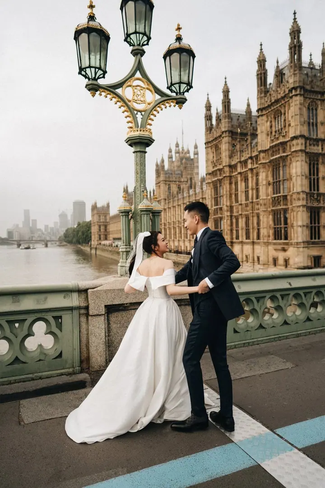
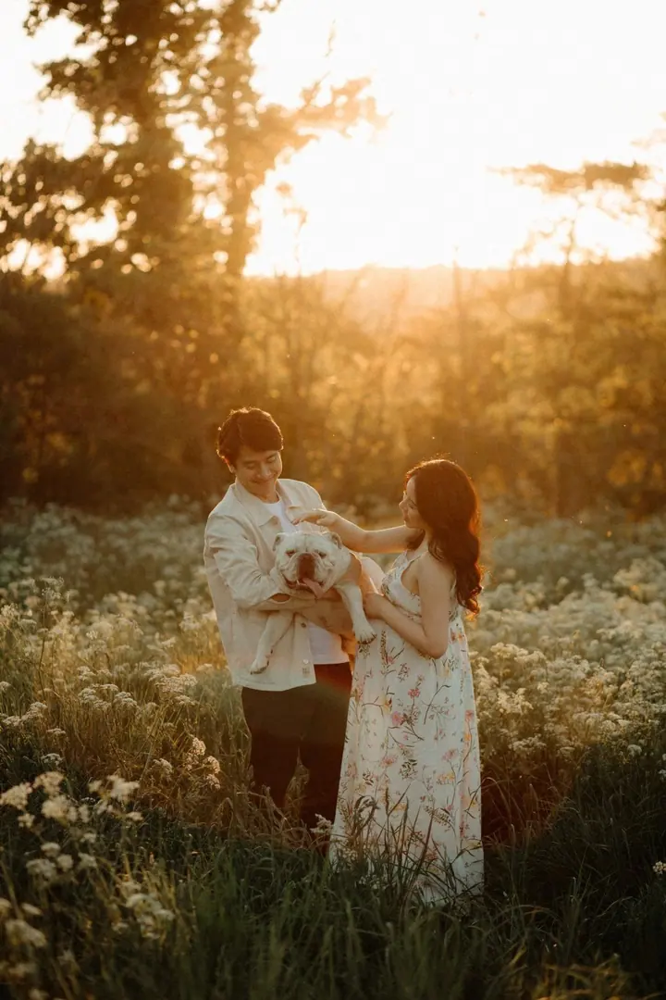
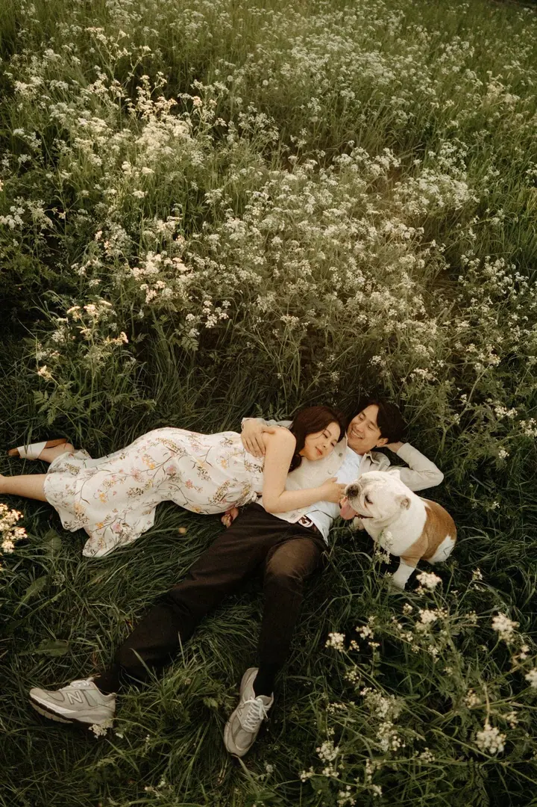

jedna
Svatební fotožurnalistika
Romantické svatební galerie v dokumentárním stylu. Zachycuji ikonické momenty dne i ty nejupřímnější chvíle s vašimi blízkými, v Praze i v zahraničí.

Svatební a rodinná fotografka · Praha, svatby v zahraničí

Jmenuji se Iva Nguyen a už 8 let fotím romantické svatby v dokumentárním stylu, v Praze i daleko za hranicemi. Ráda vyprávím také příběhy rodin. K fotografii mám blízko i jako make-up artistka a majitelka svatebního salonu.
Více o mně
Co fotím
jedna
Romantické svatební galerie v dokumentárním stylu. Zachycuji ikonické momenty dne i ty nejupřímnější chvíle s vašimi blízkými, v Praze i v zahraničí.
dvě
Uvolněné focení celé rodiny, při kterém nechávám prostor opravdové radosti a blízkosti.
tři
Sváteční focení v teplém světle a vánočně vyzdobené scéně, pro rodiny, páry i maminky s miminky.
Jemné fotky plné ženskosti a klidné atmosféry z období, kdy čekáte miminko.

Nejvíc mě inspirují upřímné chvíle s vašimi blízkými


Za objektivem
Nežiji v Česku od malička, a tak je pro mě čeština pořád trochu bariéra. Našla jsem si ale vlastní způsob vyprávění, a to přes fotografie. A ještě víc mě těší, že vím, které příběhy mě inspirují nejvíc. Už 8 let za nimi jezdím až na kraj světa.
Má práce stojí na lásce k vizuálnímu detailu, ženskosti a autentické atmosféře. Na svatbě hledám hlavně upřímné chvíle s vašimi blízkými, protože právě v nich je podstata celého dne. Emoce, radost a krása, kterou nelze naaranžovat.
Kromě focení se věnuji make-upu a v pražských Nuslích mám vlastní svatební salon. Díky tomu ke každé nevěstě přistupuji s citem, precizností a vlastním uměleckým pohledem.
Iva
Ozvěte se telefonem nebo e-mailem a pošlete mi termín a pár slov o vaší svatbě nebo focení.
U svatby si vyberete balíček na 8, 10 nebo 12 hodin focení. Domluvíme se, co pro vás bude ten den důležité.
Fotím v dokumentárním stylu, takže nemusíte pózovat. Zachytím ikonické momenty i nenápadné chvíle s vašimi blízkými.
Upravené fotografie dostanete přes Dropbox, u svatby přibližně za 30 až 80 dní. Tištěné fotografie dorazí obvykle o 10 až 30 dní později.
Portfolio
Otázky
Svatební balíčky začínají na 19 990 Kč a podle délky focení se pohybují až do 27 900 Kč. Zahrnují 250 až 350 upravených fotografií, tištěné fotky 10 × 15 cm a online galerii na jeden rok.
U svatebního a zásnubního focení je to přibližně 30 až 80 dní, podle sezóny a rozsahu zakázky. Pokud objednáte tisky, počítejte s dalšími 10 až 30 dny.
Ano, za příběhy svých párů ráda cestuji. Napište mi, kde se budete brát, a domluvíme podrobnosti.
Přesun kvůli počasí nebo osobním důvodům je možný, pokud mám na nový termín volno. Při zásahu vyšší moci můžete svatbu přesunout v rámci stejného roku bez poplatku.